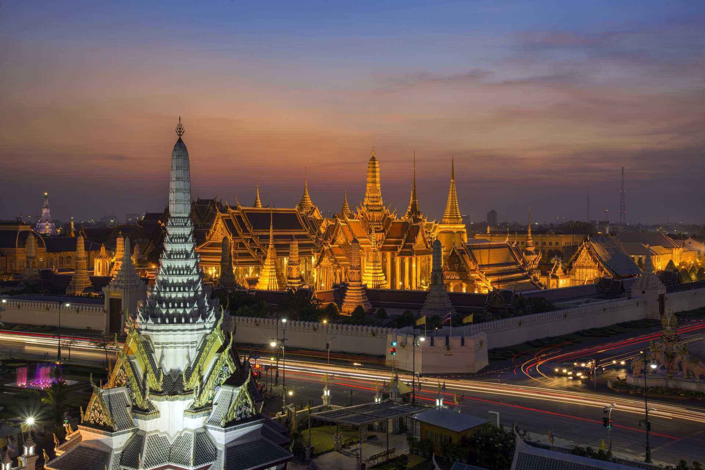
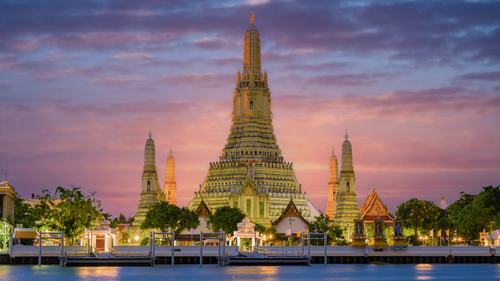
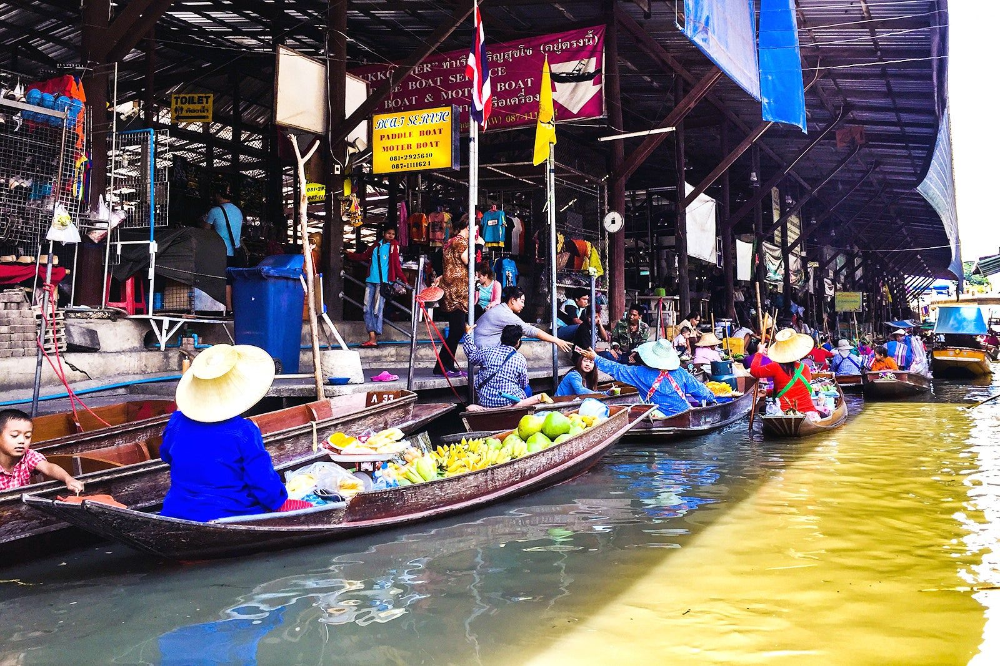

O turismo na Tailândia, especialmente em Bangkok, começou a crescer fortemente a partir dos anos 1960 e 1970, impulsionado pela abertura ao turismo internacional e pela popularização do Sudeste Asiático como destino exótico e acessível. Bangkok rapidamente se tornou a porta de entrada do país, oferecendo uma combinação única de tradição e modernidade, com templos históricos coexistindo com uma vida urbana intensa.
Bangkok frequentemente lidera rankings globais com cerca de 20 a 25 milhões de visitantes internacionais por ano. A cidade gera dezenas de bilhões de dólares em receita turística, sendo uma das mais lucrativas do mundo nesse setor. O custo relativamente baixo para turistas, aliado à diversidade cultural e gastronômica, contribui para uma alta taxa de permanência e retorno. A cidade também é extremamente popular entre mochileiros e viajantes de luxo.
Entre os principais pontos turísticos estão o Grand Palace, o templo Wat Arun e os tradicionais mercados flutuantes. A vida noturna vibrante, a culinária de rua e os templos budistas fazem parte da experiência essencial da cidade. Bangkok também serve como base para explorar outras regiões da Tailândia.


Para voltar à página inicial, clique aqui.